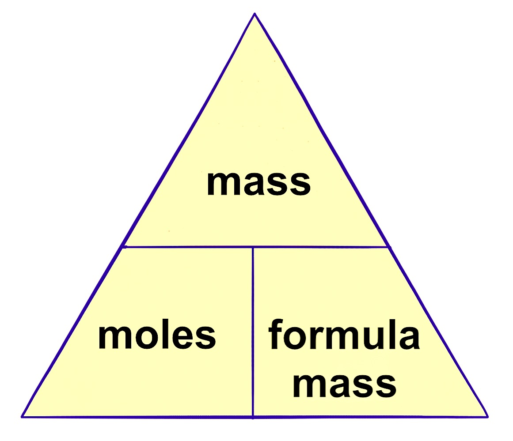

How to calculate the mass of substance given the number of moles
The formula to do this is


To work out how much mass of a substance contains a certain number of moles.
Multiply the moles by the relative mass.
Either the relative atomic mass for an element
that is made up of single atoms, or the relative formula mass for any molecular element
or any compound.
Examples
1. Calculate the mass of 2.5mol of potassium metal.
- mass = moles x relative mass
- moles = 2.5
- relative mass : in this case the relative atomic mass of potassium K = 39.098
- mass = 2.5 x 39.098 = 97.745g
2. Calculate the mass of 5.465mol of potassium metal.
- mass = moles x relative mass
- moles = 5.465
- relative mass : in this case the relative atomic mass of potassium K = 39.098
- mass = 5.465 x 39.098 = 213.671g
3. Calculate the mass of 5.465mol of sodium chloride.
- mass = moles x relative mass
- moles = 5.465
- relative mass : in this case the relative formula mass of sodium chloride NaCl = 22.990 + 35.45 = 58.44
- mass = 5.465 x 58.44 = 319.375g
4. Calculate the mass of 10mol of Oxygen.
- mass = moles x relative mass
- moles = 10
- relative mass : in this case the relative formula mass of oxygen O2 = 15.999 x 2 = 31.998
- mass = 10 x 31.998 = 319.980g